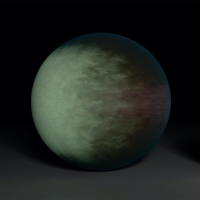

Caleb K. Harada
Research
Planets are among the most intriguing objects in the Universe. Using telescopes on the ground and in space, combined with the tools of computer science, statistics, mathematics, and physics, I discover and characterize new planets, investigate their atmospheres, and study their potential to be habitable.
Innumerable celestial bodies, stars, suns and earths may be sensibly perceived...by us, and an infinite number of them may be inferred by our own reason. [A]ll those worlds...contain animals and inhabitants no less than can our own earth, since those worlds have no less virtue nor a nature different from that of our earth.
— Giordano Bruno, De l'Infinito, Universo e Mondi (1584)
Precursor Science for the Habitable Worlds Observatory
Illustration: NASA/JPL-Caltech The Decadal Survey on Astronomy and Astrophysics 2020 "Pathways to Discovery in Astronomy and Astrophysics" (Astro2020) has recommended that NASA realize a large IR/O/UV space telescope optimized for high-contrast imaging and spectroscopy of ~25 exo-Earths and transformative general astrophysics. The NASA Exoplanet Exploration Program (ExEP) has subsequently released a Mission Star List consisting of 164 nearby targets deemed the most accessible to survey for potentially habitable exoplanets with the Habitable Worlds Observatory (HWO). Precursor studies of promising targets for the future HWO exo-Earth survey are necessary to reduce mission design risk by enabling science and engineering trades that weigh how key design choices and astrophysical realities impact the yield of potentially habitable planets characterized by HWO. Identifying and characterizing the most promising targets early on in mission development will inform critical mission requirements (e.g., inner/outer working angle, field of regard, sensitivity, settling time, slew speed, wavelength coverage, etc.) and facilitate target selection later on in the mission design process. I'm working to identify and improve our understanding of the most promising targets for HWO as part of the HWO Stellar Properties & Observational Reconnaissance for Exoplanet Studies (SPORES) collaboration.
Learn moreExomoons Orbiting Temperate Giant Planets
 Illustration: NASA/JPL-Caltech
Exomoons are the hypothesized natural satellites of exoplanets, which may hold clues about planet formation, migration,
and habitability. Exomoons orbiting temperate giant planets (i.e., planets that are orbiting near the "habitable zone"
of their host stars, but are too gas- or volatile-rich to have a habitable surface) are particularly interesting because
they are predicted to be stable over long periods of time and could, in principle, support life. Temperate exomoons
could dramatically expand the range of "habitable" environments beyond the Solar System, especially considering the tantalizing
prospect of icy moons in the outer Solar System being amenable to life. To date, no exomoon detections
have been confirmed due to both the low expected signal-to-noise and astrophysical systematic
uncertainties like stellar variability. Nonetheless, theoretical studies of exomoon stability can place important limits
on what we may expect to observe in temperate Jovian systems in the future with more precise technology, as well as informing
uncertainties in ultra-precise measurements of exoplanet systems.
Illustration: NASA/JPL-Caltech
Exomoons are the hypothesized natural satellites of exoplanets, which may hold clues about planet formation, migration,
and habitability. Exomoons orbiting temperate giant planets (i.e., planets that are orbiting near the "habitable zone"
of their host stars, but are too gas- or volatile-rich to have a habitable surface) are particularly interesting because
they are predicted to be stable over long periods of time and could, in principle, support life. Temperate exomoons
could dramatically expand the range of "habitable" environments beyond the Solar System, especially considering the tantalizing
prospect of icy moons in the outer Solar System being amenable to life. To date, no exomoon detections
have been confirmed due to both the low expected signal-to-noise and astrophysical systematic
uncertainties like stellar variability. Nonetheless, theoretical studies of exomoon stability can place important limits
on what we may expect to observe in temperate Jovian systems in the future with more precise technology, as well as informing
uncertainties in ultra-precise measurements of exoplanet systems.
Discovering New Exoplanets in Multi-planet Systems
Illustration: NASA/JPL-Caltech/R. Hurt (IPAC) Multiplanet systems are highly valuable for studying the physics governing planet formation and evolution, but many of the multiplanet systems discovered prior to the TESS mission orbit stars too faint for detailed follow-up observations. With recent TESS observations of relatively bright stars known to host at least one planet, we can discover new transiting planets and expand the sample of long-period planets by detecting single-transit events. This is an important step in building up a robust sample of multiplanet systems that can be used to test theories of planet formation and migration. Additionally, as value-added, searching for multi-planet systems with TESS will enable us to discover new exoplanets that are especially compelling targets for detailed follow-up and atmospheric characterization.
Learn moreClouds in Hot Jupiter Atmospheres
Illustration: NASA/JPL-Caltech/MIT Despite their intrinsically low abundance, Hot Jupiters are easily the most well-characterized class of exoplanets thanks to their large sizes, high masses, and hot temperatures (and therefore high signal-to-noise). However, much of the relevant physics underlying these planets remains mysterious, as there are no Solar System analogs and laboratory experiments in this regime are difficult. This makes interpreting observations of hot Jupiters challenging. Mineral clouds are a key example of atmospheric phenomena on hot Jupiters that likely influence observable quantities (such as thermal emission spectra), yet are poorly understood in terms of their physical properties, spatial extent, and sedimentation efficiency (to list a few things). Several different approaches to modeling clouds in hot Jupiter atmospheres have been developed that span a wide range of physical assumptions. By comparing observations to simulated expectations under different cloud model assumptions, we can better understand the nature of these exotic exoplanets.
Learn more